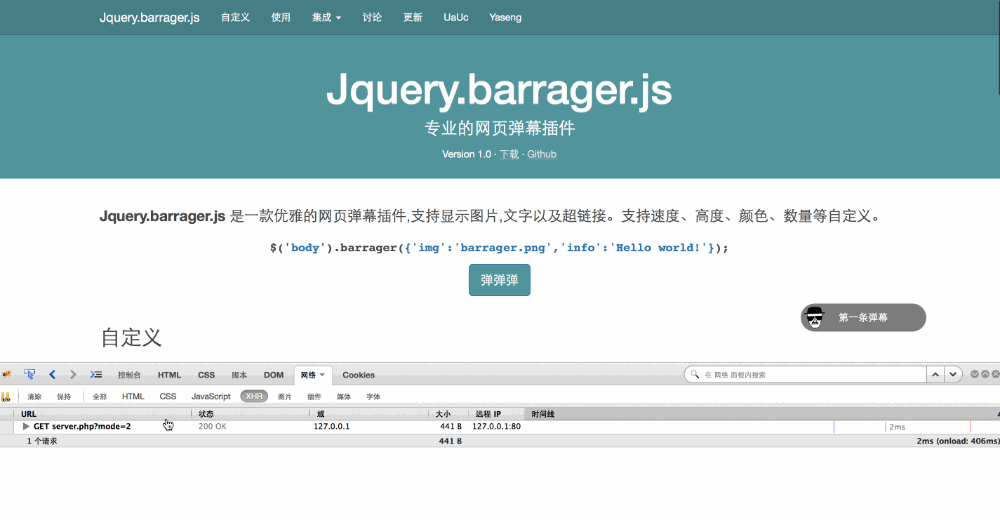
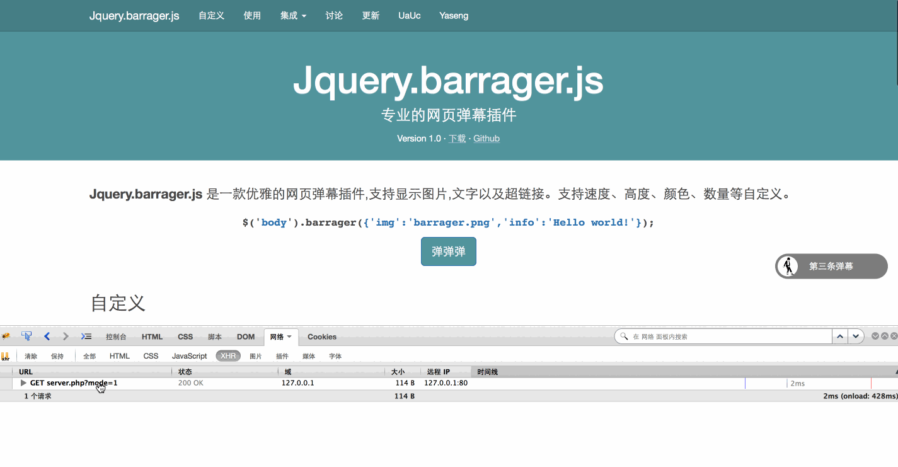

Jquery.barrager.js
专业的网页弹幕插件
专业的网页弹幕插件
Jquery.barrager.js 是一款优雅的网页弹幕插件,支持显示图片,文字以及超链接。支持速度、高度、颜色、数量等自定义。
$('body').barrager({'img':'barrager.png','info':'Hello world!'});
var item={
img:'static/heisenberg.png', //图片
info:'弹幕文字信息', //文字
href:'http://www.yaseng.org', //链接
close:true, //显示关闭按钮
speed:6, //延迟,单位秒,默认6
bottom:70, //距离底部高度,单位px,默认随机
color:'#fff', //颜色,默认白色
old_ie_color:'#000000', //ie低版兼容色,不能与网页背景相同,默认黑色
}
$('body').barrager(item);
$.fn.barrager.removeAll();

'第一条弹幕',
'img' => 'static/img/heisenberg.png',
'href' => 'http://www.yaseng.org',
),
array(
'info' => '第二条弹幕',
'img' => 'static/img/yaseng.png',
'href' => 'http://www.yaseng.org',
'color' => '#ff6600'
),
array(
'info' => '第三条弹幕',
'img' => 'static/img/mj.gif',
'href' => 'http://www.yaseng.org',
'bottom' => 70 ,
),
array(
'info' => '第四条弹幕',
'href' => 'http://www.yaseng.org',
'close' =>false,
),
);
//随机输出一个
echo json_encode($barrages[array_rand($barrages)]);
浏览器端获取json 弹幕数据,setInterval 调用,如有弹幕,就显示。
代码如下
//每条弹幕发送间隔
var looper_time=3*1000;
//是否首次执行
var run_once=true;
do_barrager();
function do_barrager(){
if(run_once){
//如果是首次执行,则设置一个定时器,并且把首次执行置为false
looper=setInterval(do_barrager,looper_time);
run_once=false;
}
//获取
$.getJSON('server.php?mode=1',function(data){
//是否有数据
if(data.info){
$('body').barrager(data);
}
});
}
效果如图

第二种模式示范代码。
server 端 (php)
//数组里面可以自定义弹幕的所有属性。
$barrages=
array(
array(
'info' => '第一条弹幕',
'img' => 'static/img/heisenberg.png',
'href' => 'http://www.yaseng.org',
),
array(
'info' => '第二条弹幕',
'img' => 'static/img/yaseng.png',
'href' => 'http://www.yaseng.org',
'color' => '#ff6600'
),
array(
'info' => '第三条弹幕',
'img' => 'static/img/mj.gif',
'href' => 'http://www.yaseng.org',
'bottom' => 70 ,
),
array(
'info' => '第四条弹幕',
'href' => 'http://www.yaseng.org',
'close' =>false,
),
);
echo json_encode($barrages);
浏览器端
$.ajaxSettings.async = false;
$.getJSON('server.php?mode=2',function(data){
//每条弹幕发送间隔
var looper_time=3*1000;
var items=data;
//弹幕总数
var total=data.length;
//是否首次执行
var run_once=true;
//弹幕索引
var index=0;
//先执行一次
barrager();
function barrager(){
if(run_once){
//如果是首次执行,则设置一个定时器,并且把首次执行置为false
looper=setInterval(barrager,looper_time);
run_once=false;
}
//发布一个弹幕
$('body').barrager(items[index]);
//索引自增
index++;
//所有弹幕发布完毕，清除计时器。
if(index == total){
clearInterval(looper);
return false;
}
}
});
效果如图
